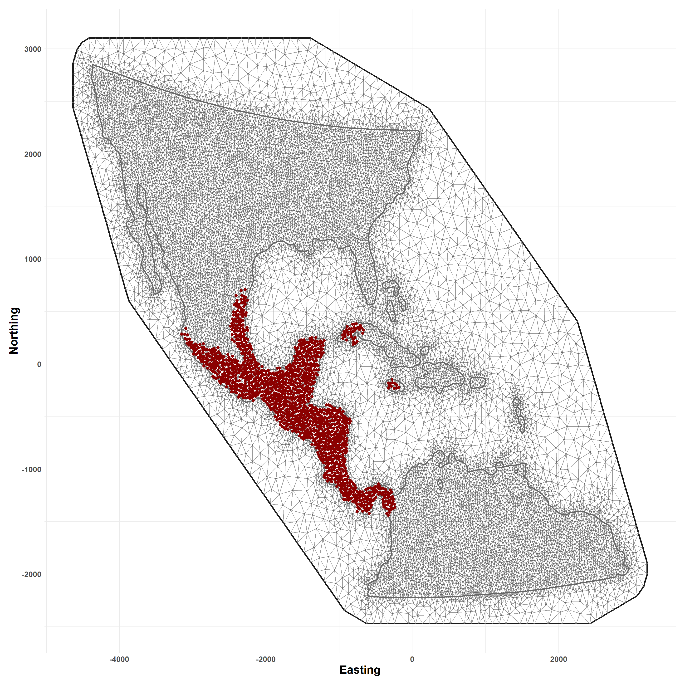

Mesh construction, tessellation, and defining the spatial domain
Overview
The script demonstrates spatial discretization of the study area as detailed in the associated manuscript. First, a triangulated mesh is constructed using administrative boundaries and simulated case point locations. Next, natural neighborhoods are defined using Voronoi tessellation around mesh vertices, such that each cell encapsulates the area each vertex. The resulting polygons define the spatial support and associated integration weights for numerical approximation of the spatial point-process model.
Note
This script assumes that supporting data has already been downloaded to a directory called /demo and that NWS case detections have been simulated as described on the Simulation page of this site.
Libraries
Load needed libraries and packages.
Hide code
library(tidyverse) # data wranglingoptions(dplyr.summarise.inform =FALSE)library(here) # directory managmentlibrary(pals) # color paletteslibrary(osfr) # interact with Open Science Framework (OSF, data repository)library(terra) # spatial data manipulationlibrary(sf) # spatial data manipulationlibrary(spatstat) # spatial data manipulationlibrary(raster) # spatial data manipulationselect <- dplyr::select # deconflict dplyr w/raster # see https://www.r-inla.org/home# install.packages("INLA",repos=c(getOption("repos"),INLA="https://inla.r-inla-download.org/R/stable"), dep=TRUE)library(INLA) # mesh construction, inference
These are NWS cases as simulated in the Simulation tab of this site.
Hide code
sim_data_df <-read_csv(here("demo/sim_locations_demo.csv"))nws_points <-vect(sim_data_df, geom =c("x", "y"), crs ="EPSG:4326") # raw are unprojectednws_points <-project(nws_points, crs(states_proj)) # project to aea, units km
Build Spatial Mesh
Define spatial domain through construction of a spatial triangulation (mesh). Requires use of the r-INLA package.
Note that because the simulated points used in this script differ from the data presented in the associated paper, results here may be slightly different.
Hide code
# process requires classic spatial objectspoints_sp <-as(nws_points, "Spatial")# slight buffer distance to smooth edgesstates_simple_buf <-st_buffer(states_simple, dist =20)simple_union <-st_union(states_simple_buf) # dissolve states# convert to Spatialdom_bnds <-as(simple_union, "Spatial")# to INLA formatdom_seg <-inla.sp2segment(dom_bnds)set.seed(1976) # random seedmesh.dom <-inla.mesh.2d(boundary = dom_seg, loc = points_sp,cutoff =25, max.edge =c(50, 200),offset =c(100,250),min.angle =30) mesh.dom$n # node number
[1] 15346
View Mesh
Simulated NWS cases overlain as points.
Hide code
plot_mesh(mesh.dom)

Natural Neighborhoods
Apply tessellation to mesh vertices to identify area of support, or natural neighborhoods around each. Here, this is done using the custom convert_mesh_poly() function.
Hide code
# mesh areas to polygonsmesh_polys <-convert_mesh_poly(mesh.dom)# to spatvector and projectmesh_polys <-vect(mesh_polys)crs(mesh_polys) <-crs(states_proj)# calculate areamesh_polys$area <-expanse(mesh_polys, unit ="km")
Plot Neighborhoods
Visual inspection of study area with neighborhoods color coded by geographic area and overlain with mesh and nodes.